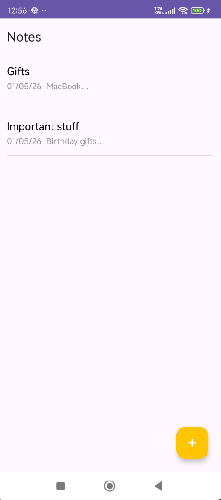
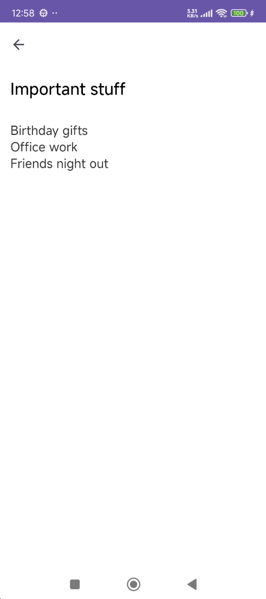
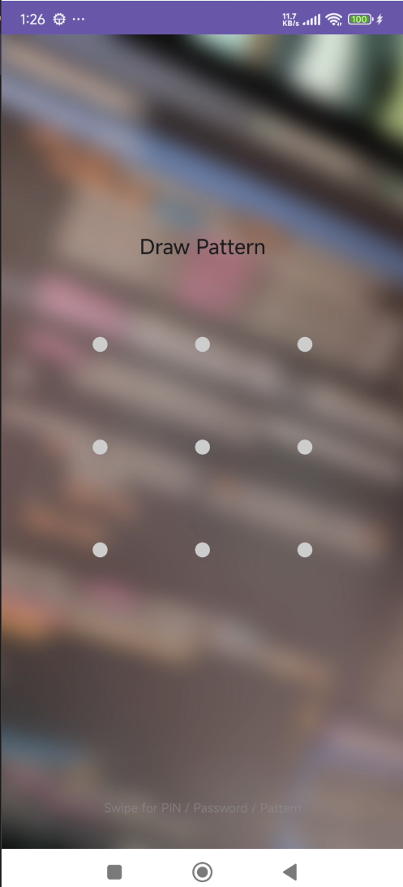
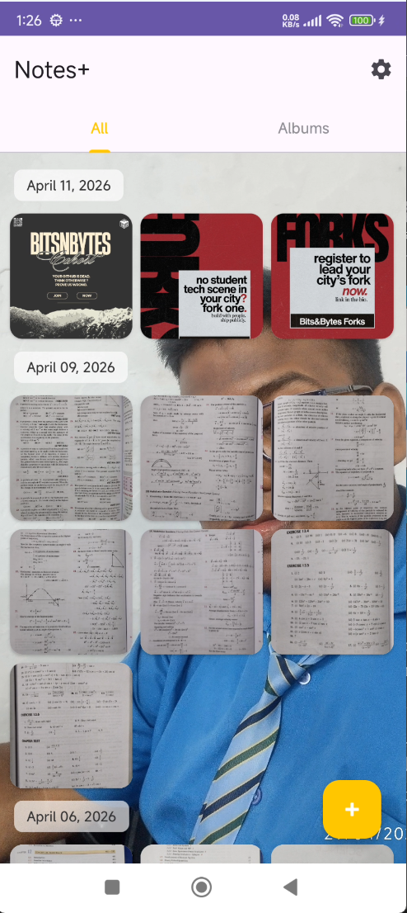
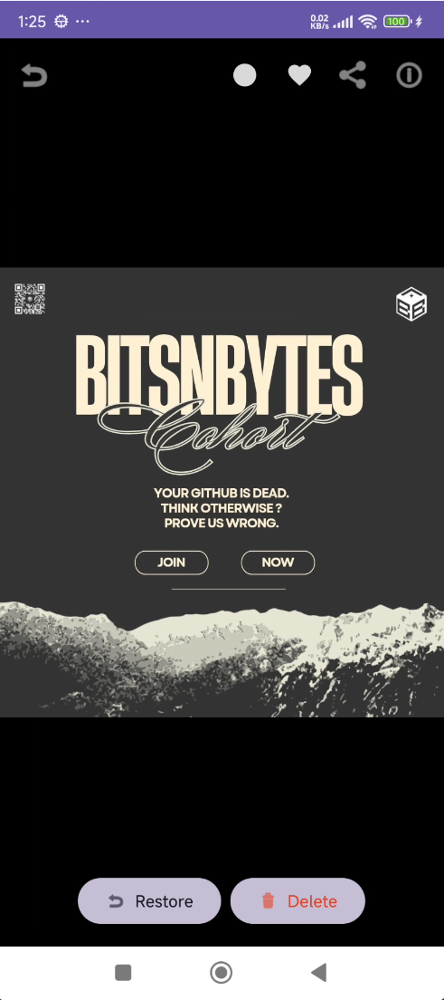
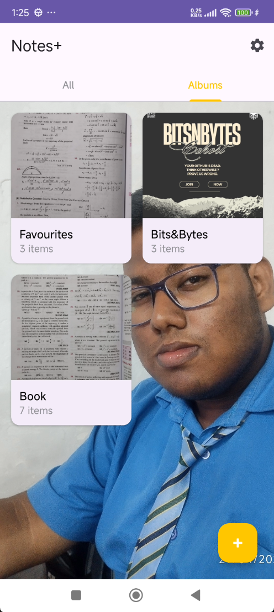
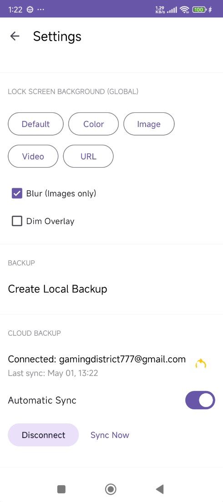
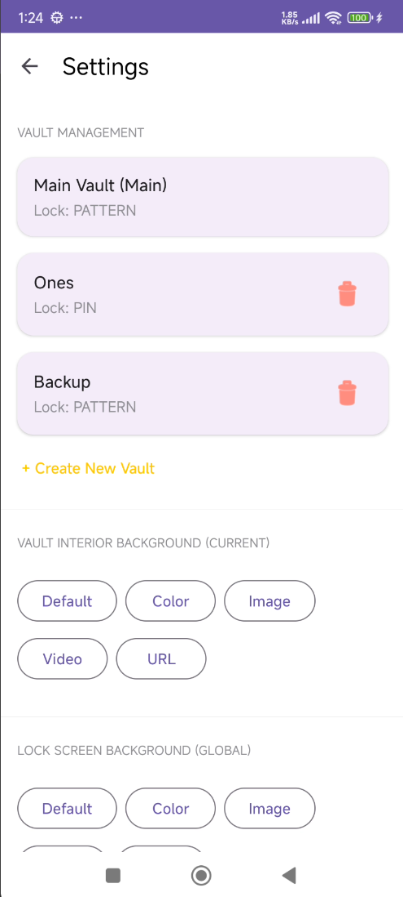

A notepad that
feels like home
Inspired by Apple Notes, Notes+ gives you a distraction‑free writing experience on Android. No clutter, no learning curve — just open and type. Your notes are listed cleanly with titles, dates, and previews.
- Clean list view with date stamps and content preview
- Full-screen editor with auto-save
- Swipe to delete with undo support
- Minimal UI inspired by iOS Notes
- Works completely offline


The vault nobody
knows about
Hold the title bar for 2 seconds. That's it — a secret gesture that opens a completely hidden lock screen. No app icon, no launcher shortcut, no evidence it even exists. To everyone else, Notes+ is just a notepad.
- Secret 2‑second long‑press gesture to enter
- Choose PIN, Password, or Pattern lock
- Swipe to switch between lock types instantly
- No visible trace — looks like a normal notes app
- Wrong attempts don't reveal the vault exists

Your photos,
encrypted at rest
Every photo and video inside the vault is encrypted with AES‑256 — the same standard used by banks and governments. Files are organized by date in a beautiful grid, and you can multi‑select to share, delete, or restore.
- AES‑256 encryption for all stored media
- Date‑grouped grid layout with smooth scrolling
- Multi‑select mode for batch operations
- Full‑screen viewer with share, restore, and delete
- Video playback support inside the vault


Organize with
albums & favourites
Create custom albums inside the vault to keep things tidy. Tap the heart in the media viewer to add photos to your Favourites — a virtual album that always sits at the top of your collection.
- Create unlimited custom albums
- Heart button to favourite any photo or video
- Virtual Favourites album — always at the top
- Album grid with cover previews and item counts
- Move media between albums freely

Multiple vaults.
One app.
Create separate vaults, each with their own lock type and password. Use a decoy vault with harmless content for plausible deniability — if someone forces you to unlock, show them the decoy. Vault management is only accessible from the main vault, so secondary vaults can't reveal each other.
- Create unlimited independent vaults
- Each vault has its own PIN, password, or pattern
- Decoy vault for plausible deniability
- Vault management hidden inside the main vault
- Delete a vault and its contents are wiped permanently
Never lose
anything
Back up your entire vault locally as a .bak file to your Documents folder, or connect Google Drive for incremental cloud sync. Choose automatic sync on every change or trigger it manually. Restoring gives you merge or replace options so you never accidentally overwrite.
- Local .bak backup to Documents folder
- Google Drive incremental sync
- Automatic or manual sync modes
- Full restore with merge or replace options
- Backup includes all vaults, albums, and settings

Make it yours
Every vault can have its own interior background — choose a color, image, video, or even a URL. The lock screen background is universal across vaults, with a blur toggle for images. The glassmorphism design carries through every screen for a consistent, premium feel.
- Per‑vault interior backgrounds (color, image, video, URL)
- Universal lock screen background with blur toggle
- Dim overlay option for readability
- Glassmorphism UI throughout the vault
- Settings only accessible from the main vault
